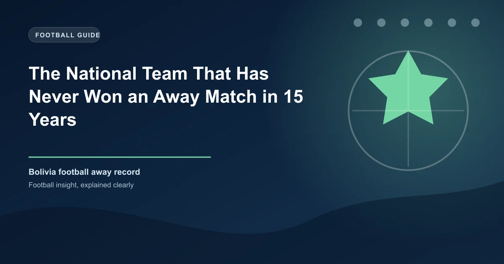

There's a specific kind of dread that comes with travelling away in South American World Cup qualifying. The altitude of La Paz, the hostility of Buenos Aires, the suffocating heat of Barranquilla - CONMEBOL's qualifying campaign is widely considered the most grueling in world football. But for one nation, the problem wasn't the difficulty of individual away fixtures. It was the accumulation of decades of failure, a streak so long it became the defining statistic of an entire footballing culture.
Bolivia went 67 consecutive World Cup qualifying matches without an away win - a drought that lasted from July 18, 1993, until September 11, 2025. That's not 15 years. That's more than three decades. It's the longest winless away streak in the entire history of World Cup qualifying, a record that surpasses even the most desperate runs in international football.
To understand the magnitude of Bolivia's away futility, you need to know where the streak began. On July 18, 1993, Bolivia traveled to Puerto Ordaz, Venezuela, and won 7-1 in a World Cup qualifier. It was a demolition. Venezuela, then one of South America's weakest teams, offered little resistance against a Bolivian side that was enjoying a rare moment of competence.
That 7-1 victory would be Bolivia's last away win in World Cup qualifying for 32 years. Every match they played on the road - in Brazil, Argentina, Colombia, Chile, Uruguay, Paraguay, Peru, Ecuador, and Venezuela - ended in either a draw or a defeat. Some were narrow. Many were not.
Bolivia's story is one of the strangest paradoxes in international football. At home, playing at the Estadio Hernando Siles in La Paz at roughly 3,640 meters above sea level, they've been genuinely dangerous. The altitude is so severe that visiting teams often struggle to breathe in the second half. Bolivia has beaten Brazil, Argentina, and Uruguay in La Paz over the years, and their home record in qualifying has often been respectable.
But take them off that mountain and they become a different team entirely. The altitude that gives them an advantage at home becomes a psychological and physical handicap away. Players who are accustomed to performing in thin air find themselves gasping at sea level - not because they can't breathe, but because the tactical identity built around altitude advantage dissolves the moment they step off the plane.
Over the years, Bolivia's away matches in qualifying followed a depressingly predictable pattern. Early optimism would give way to defensive retreat. The team would sit deep, absorb pressure, and hope for a set piece or a moment of individual brilliance. More often than not, they'd concede first, lose confidence, and crumble. Some of the losses were catastrophic - heavy defeats that made the scoreline look like a mismatch between a professional team and a Sunday league side.
Numbers can feel abstract, but 67 consecutive away losses without a win creates real psychological damage. For an entire generation of Bolivian footballers, the idea of winning away from home became something that simply didn't happen. It wasn't a matter of tactics or preparation - it was an identity. Bolivia were the team that could only win at home. Everyone knew it, including Bolivia.
This kind of sustained failure creates a self-fulfilling prophecy. Young players coming through the system absorb the belief that away matches are lost before they begin. Coaches adjust their tactics to minimize damage rather than pursue victory. And fans, while passionately supporting the team at home, travel to away fixtures with an acceptance of defeat that borders on fatalism.
Consider that during this period, Bolivia played away against virtually every South American nation multiple times. They traveled to Brazil, Argentina, Colombia, Chile, Uruguay, Paraguay, Peru, Ecuador, and Venezuela - teams ranging from world champions to fellow strugglers. They couldn't beat any of them on their own soil. Not once. In 67 attempts.
On September 11, 2025, Bolivia traveled to Santiago to face Chile in a 2026 World Cup qualifier. Chile, themselves struggling in the qualifying campaign, were expected to win comfortably at home. Bolivia's away record was well known, and few gave them a chance.
Bolivia won 2-1.
The final whistle in Santiago didn't just end a football match. It ended the longest away winless streak in the history of World Cup qualifying. The IFFHS (International Federation of Football History & Statistics) officially recognized the achievement, placing Bolivia's record at the top of an unwelcome podium:
| Rank | Team | Games | Period |
|---|---|---|---|
| 1 | Bolivia | 67 | 1993-2025 |
| 2 | Luxembourg | 53 | 1937-2008 |
| 3 | San Marino | 38+ | 1992-present |
Luxembourg's 53-match streak had taken 71 years and 16 full qualifying campaigns to break. Bolivia's 67-match streak was concentrated into a shorter timeframe but spanned a more competitive era of South American qualifying. Both records share a common thread: the teams that set them were so far below the continental standard that even occasional progress felt like an uphill battle.
Bolivia's away futility is the most extreme, but they're not the only team to endure a prolonged inability to win on the road. The IFFHS rankings reveal some fascinating parallels:
Luxembourg held the previous record before Bolivia overtook them. From their debut in World Cup qualifying in 1937, it took them 71 years to finally win an away qualifier - a 2-1 victory over Switzerland on September 10, 2008. The irony: Switzerland went on to win that qualifying group anyway.
San Marino holds third place with 38 consecutive away World Cup qualifiers without a win, and the streak continues. They've managed only two away draws in their entire history - a 1-1 draw against Latvia in 2001 and a 0-0 against Gibraltar in 2020. But unlike Bolivia, San Marino's futility isn't concentrated in qualifiers alone. They've never won a World Cup qualifying match of any kind, home or away, since joining FIFA in 1990.
In South American qualifying, where ten teams play each other home and away in a round-robin format over nearly two years, away form is often the difference between qualification and elimination. The top teams in CONMEBOL - Brazil, Argentina, Uruguay - consistently pick up points on the road. Even mid-table teams like Paraguay and Venezuela have learned that winning away from home is essential to compete for a top-six finish.
Bolivia's inability to win away meant they were essentially starting every qualifying campaign with a built-in handicap. While other teams could afford to drop points at home knowing they'd pick some up on the road, Bolivia had to be near-perfect at home just to stay competitive. It was a mathematical trap that made qualifying virtually impossible.
Bolivia's record is a masterclass in why home/away splits matter for betting analysis. A team's overall qualifying record can be misleading if it hides extreme home/away disparities. When analyzing South American qualifiers, always separate home and away form. Bolivia's home record in La Paz was often respectable, but their away form was catastrophic. Teams with similar imbalances - strong at home, terrible on the road - represent potential value in home matches and trap bets in away fixtures.
Bolivia's story raises an important question in football analysis: why do some nations struggle so profoundly away from home while others adapt? The answer lies in a combination of factors that go beyond simple tactical preparation:
These factors compounded over decades, creating a cycle that proved almost impossible to break. When it finally did break, it wasn't because of a dramatic tactical revolution. It was because a new generation of players simply refused to accept the old narrative.
Bolivia's 2-1 win in Chile in September 2025 didn't just end a statistical curiosity. It shattered a psychological barrier that had defined the team for a generation. For the first time in over three decades, Bolivian players could travel to an away qualifier believing they could win - not as a hopeful fantasy, but as something that had actually happened.
The timing couldn't have been better. With the 2026 World Cup expansion giving CONMEBOL more opportunities, Bolivia needed to prove they could compete on the road. That win in Chile was the first step. Whether it leads to sustained improvement or remains a one-off anomaly will depend on whether the next generation can build on what their predecessors couldn't.
For now, the streak is over. 67 matches. 32 years. Seven qualification campaigns. And finally, a single afternoon in Santiago where Bolivia proved that even the longest droughts eventually end.
Check our free daily football predictions to apply these strategies.